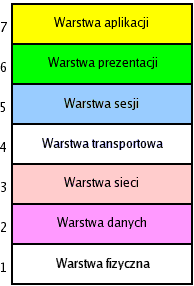
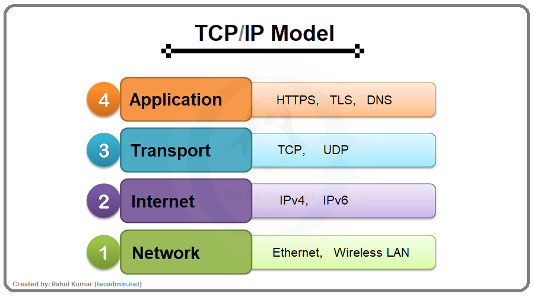
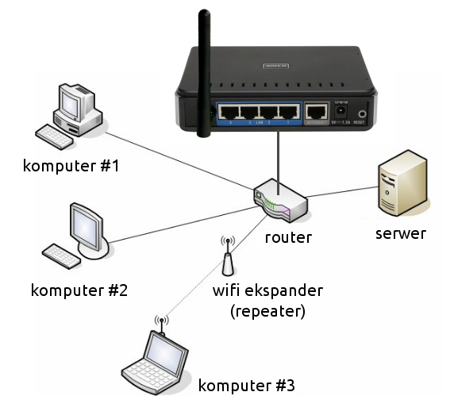

Warstwowy model sieci
OSI tcp-ip
Model warstwowy OSI

Model OSI
(Open Systems Interconnection) opisuje sposób przepływu informacji między aplikacjami software’owymi w jednej stacji sieciowej a aplikacjami w innej stacji sieciowej przy użyciu medium transmisyjnego. Model OSI jest ogólnym modelem składającym się z siedmiu warstw, z których każda opisuje określone funkcje sieciowe.
- Warstwa aplikacji - Określa sposoby dostępu do środowiska sieciowego. Umożliwia udostępnianie plików, stron WWW, drukarek. Warstwa ta pełni rolę interfejsu między aplikacją użytkownika a usługami sieciowymi.
- Warstwa prezentacji - Definiuje i standaryzuje format danych (np. znaki narodowe, liczby). Przeprowadza kodowanie i kompresję danych.
- Warstwa sesji - Jest odpowiedzialna za prawidłową wymianę danych. Nadzoruje połączenie, wznawia je po przerwaniu.
- Warstwa transportu - Zapewnia prawidłową kolejność pakietów po złożeniu ich w stacji odbiorczej. Sprawdza sumy kontrolne pakietów i wymusza powtórzenie transmisji po wykryciu błędu.
- Warstwa sieciowa - Ustanawia połączenie między stacjami i dezaktywuje je po zakończeniu sesji. Jest odpowiedzialna za kierowanie ruchem pakietów w sieci (wyznacza trasy przebiegu pakietów).
- Warstwa łącza danych - Zapewnia niezawodność łącza danych. Współpracuje ze sterownikami urządzeń sieciowych, np. kart sieciowych.
- Warstwa fizyczna - Odpowiada za transmisję danych pomiędzy komputerami. Do warstwy tej należą urządzenia fizyczne, takie jak: karty sieciowe, modemy, koncentratory i media transmisyjne (kable, fale radiowe).
modele warstwy TCP/IP

- Warstwy aplikacji, zajmującej się reprezentacją danych dla użytkownika oraz ich kodowaniem,
- Warstwy transportowej, zapewniającej komunikację pomiędzy różnymi urządzeniami w sieci,
- Internet, zapewniający najlepszą trasę dla przepływu pakietów,
- Warstwy dostępu do sieci kontrolującej urządzenia fizyczne i media.
urządzenia sieciowe
Router

to urządzenie, które służy do łączenia sieci komputerowych, na przykład sieci Internet z domową siecią lokalną. Za pomocą wbudowanych mechanizmów (np. NAT) ruter kieruje ruchem pakietów w sieci - wyznacza dla nich odpowiednią trasę. To właśnie od procesu trasowania (ang. routing) wzięła się nazwa urządzenia.
Koncentrator
(ang. hub) dziś już nie stosowane urządzenie sieciowe służące do realizacji połączeń między komputerami w sieciach Ethernet opartych na topologii gwiazdy. Pośrednicząc w połączeniu, rozsyła zapytania do wszystkich komputerów uruchomionych w sieci. Dane trafiają do każdego aktywnego węzła, jednak odpowiada tylko ta maszyna, dla której przeznaczone są dane pakiety, pozostałe ignorują cudze pakiety.